The hidden value of niche open-source projects
Hello everyone
Welcome to my talk
About hidden value of niche open-source projects
🗂️
/Users/rhannequin/code/ideas/
Quick poll - raise your hand if you have a folder called projects, ideas, or side...
Yes, as expected, many of us
Keep your hand up if you've touched a project in that folder in the last month
Not so many hands up now, right?
I'm wasting my time,
This might seem familiar
Made it appear as a quote because this is exactly what I told myself
This is what I want to talk about today
@rhannequin
Senior developer at thoughtbot
🪐🍔🤖💻🍿
I'm Rémy
Find me online under @rhannequin
Senior developer at thoughtbot
Consultancy helping companies build great products
Remote-only company, EMEA and Americas
Don't hesitate to say Hi
Can hardly resist talking about astronomy and great food
What are we going to talk about?
💡 Tale of side projects
🫠 Valley of despair
🌅 A new hope
💎 Unlocking the treasure
This talk is about the path many side projects take
The obstacles we face
How we can overcome them
Find value in our projects
Genesis
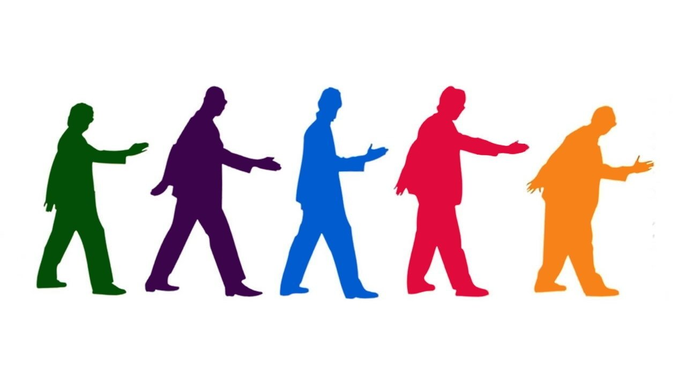
🪐 + 💻
Let's start at the beginning
I love astronomy
Been trying to do coding and apps related to it for a while
When I started, only a few data was available online
Often in a format that was not easy to use
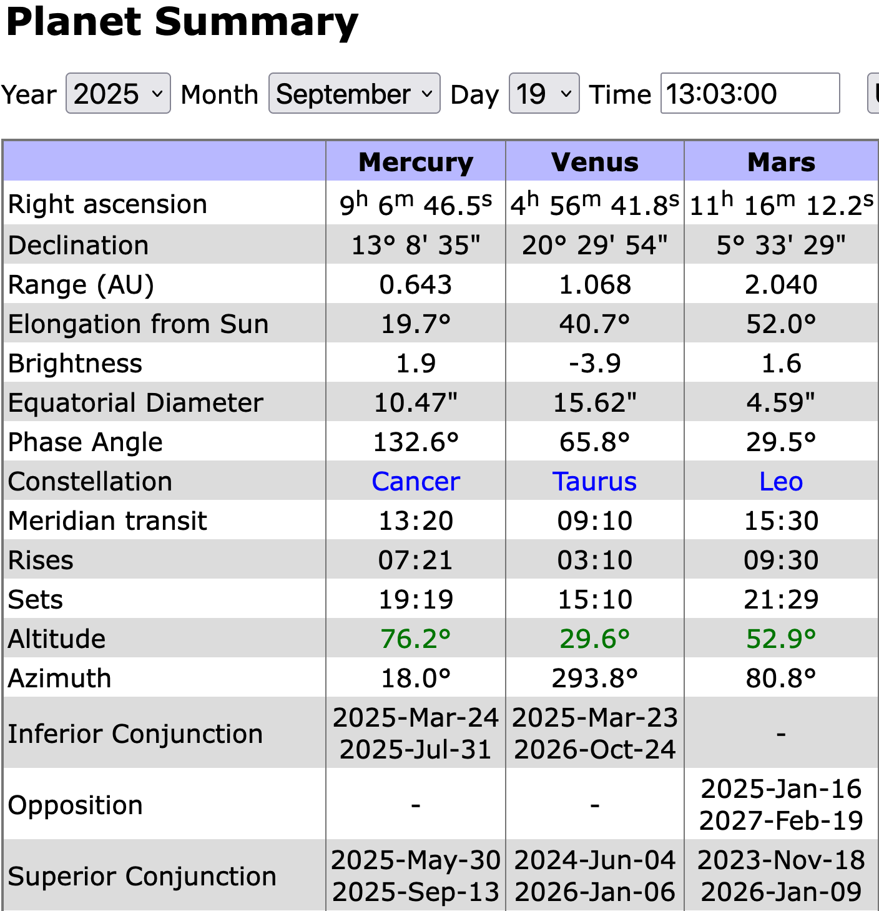
Screenshot from Heavens Above website
Provides a lot of data about the sky
Work done by Chris Peat is amazing
But this is HTML
To access this data, I would have to scrape the website
Not very nice, quite a pain to do
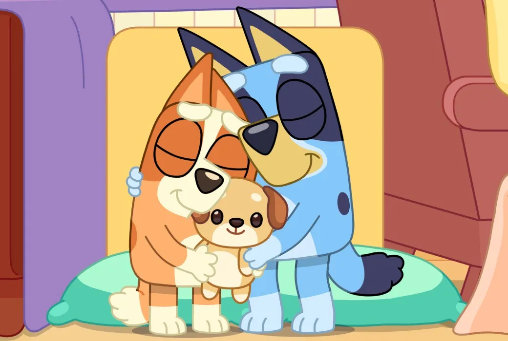
Sharing is caring
I like the idea that astronomical data is universal
Should be available to everyone
Started investigating how Chris Peat was able to produce such precise data
If I could do it myself
As the idea grew on me, started thinking it would be great to have the code open source
So someone else could do the same if they wanted
Try to explain how celestial mechanics work while I learn some of it
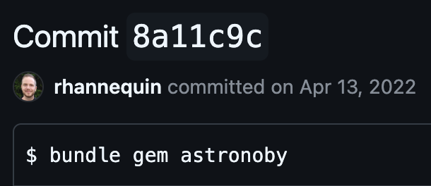
This is how I started Astronoby
Open source Ruby library
Provides astronomical data and events
mars = Astronoby::Mars.new(
instant: instant,
ephem: ephem
)
topocentric = mars.observed_by(observer)
horizontal = topocentric.horizontal
puts "Mars is #{horizontal.altitude.round(2)}°
high in the sky"
Enables to compute position of planets
Times of when they rise and set
Moon phases and much more
Here for example, exact altitude in degrees of Mars
As seen from an observer somewhere on Earth at a given time
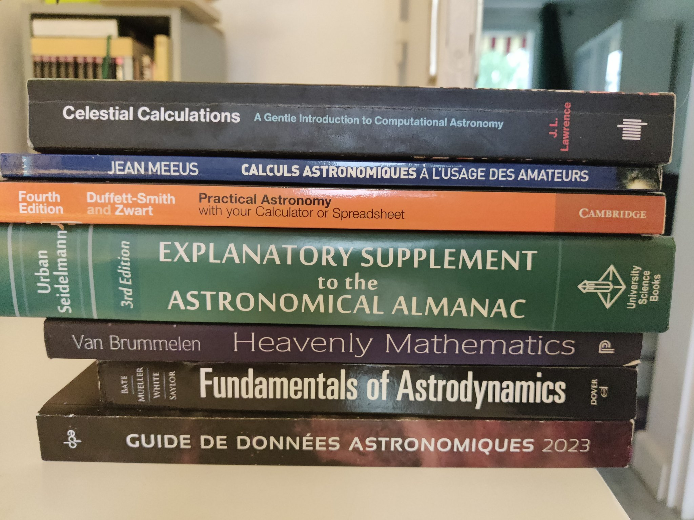
Not going to tell the whole story
Basically Astronoby started out of many books
With mathematical formulas on how to compute data and events
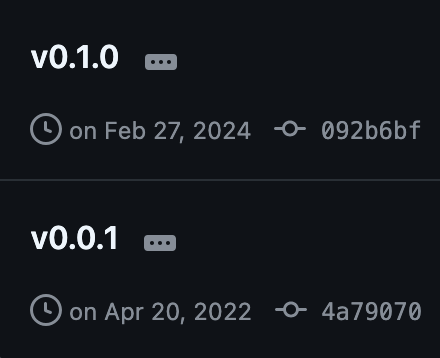
Took me almost 2 years to release the first minor version
This is the first thing about side projects
It takes time
Who needs this?
Who needs this?
Who actually needs to compute Moon phases in Ruby?
Basically, nobody cares
Not saying this in a bitter way, it's just an objective fact
Already possible to do the same in Python for years
With way better performance and features
I'm not doing this right
The classical imposter syndrome
I am not an astronomer or a scientist
How can I pretend to calculate this data right?
Who is going to trust me?
This is a real concern
Hard to trust ourselves and find legitimacy
So much effort
This one sometimes hurts your feelings
Working hard on features, improvements, code quality
And it remains unnoticed
You know how much effort and love you put into it
But there is nobody to witness it
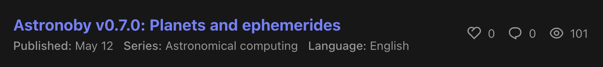
Wrote a blog post after the biggest refactoring of Astronoby
Took me months
Enabled some of the most important features brought to the library
Barely got any feedback or reaction
Said it earlier, there is a limited interest for this
Often very different from your own emotional attachment
The hidden no value of niche open-source projects
At this point, you might be wondering that the value in these projects is actually none
It is natural to feel this way
I believe we all do at some point
But my main point today is the next part
Now that I have destroyed all hopes and dreams, let's build them back up
Staying motivated
First, let's see how we can boost and keep the motivation
Work with passion
Let's start easy even if we tend to forget it
Why did you start working on this project in the first place?
You actually like this topic
It is exciting and you are having a good time
We could actually stop here
If you are having a good time, why would you stop?
You can take advantage of any interest you have to help you stay motivated and excited
But things get even more interesting when you start thinking about everything this project brings you
Personal mission and challenge
When I started my studies, I didn't know what I wanted to do
Turns out programming was giving me the same thrill of solving problems as my high school math exercises
This might be just me, I know I'm weird
But the sense of challenge
And the will to achieve my goal of providing astronomical data in Ruby
That got me excited
Set up achievable goals 🎯
🎉 Celebrate wins
Talk about it 💬
Can help to add a tiny bit of project management
Think of small thresholds that you can achieve
And celebrate them
You can also use the community to help you stay motivated
As a witness of your progress
When I wanted to lose weight, I told others I started eating healthier
Through accountability I was more likely to stick to it
Well, it didn't work, but it was worth trying
Look at what already worked
The community is full of examples of people who started niche projects and made them successful
For example, the Faker gem
Started almost 20 years ago
Initially a very niche need
Now a very popular gem with hundreds of individual contributors
Thousands of stars
Used for testing, seeding, development, fun and more
SQLite started as a small library to provide a lightweight database engine
Now it is even used by NASA on a Mars rover
And Cowsay! Started as an easter egg
But you can find it in many systems now even just to check system status
Unlocking personal and professional growth
And now comes the most interesting part
The hidden value of niche open-source projects is that it makes you grow
Open-source best practices
First, you're going to learn a lot about open-source development
Versioning
What is versioning
How do you deal with breaking changes?
These are things we don't always have the opportunity to work on in our day-to-day job
Once you publish a library, the public API is set in stone
And your own project becomes a dependency for others
This completely changes the way you think about your code
And it is really exciting
Documentation
Documentation is another opportunity that emerges from open-source projects
Your niche interest is also the interest of others
You want to help them understand your project, how to use it
You also want to make yourself in the future a favour
Because it's easy to get lost in your own code
You will learn how to write a good README
How to structure your documentation
Discover what's important in a CHANGELOG
How to document the evolution of your project
Code quality
How to write maintainable code?
How to make it readable?
What about performance?
I can't answer these questions now
But working on open-source projects will give you some answers
In the Ruby community, we have a strong appeal for code quality
And a big expertise about testing
So this is the opportunity to build strong programming skills
Community
You might be thinking "I have to learn all this??"
Well, you don't have to, it will come naturally as you work on your project
Open-source is not just about writing public code
Even if there is already a lot of value for the community
It is about sharing knowledge, collaborating
And building a community around your project
An open-source library means people can use it, look into it
Contribute to it, have opinions, and build on top of it
By making your project open-source, you are contributing to the community
And you become responsible for something that didn't exist before
This is also a great way to enter the world of open-source at your own pace
You don't have to be a Rails contributor to be a Ruby open-source developer
New technical skills
With your code being public, you might want to make it better
More efficient, more elegant
Either you are already a very experienced developer and you are going to show-off your skills
Or, you are going to learn on the way
OOP
API design
Testing
DDD?
How can I apply object-oriented programming principles to my algorithm?
How can I design a nice API for the end-user?
What's the best way to test my code?
What if I try to apply domain-driven design principles to my code?
angle1 = Astronoby::Angle.as_radians(Math::PI)
angle2 = Astronoby::Angle.as_degrees(90)
angle1.to_degrees.value == angle2.value
These were questions I asked myself working on Astronoby
Would like to show you how your project can help you learn new concepts
This code comes from Astronoby, the first working version
To deal with angles, I had dedicated classes
That were responsible for converting themselves from one unit to another
You had to convert angles to the same unit before comparing the attribute value
It works but it's not very elegant
angle1 = Astronoby::Angle.from_radians(Math::PI)
angle2 = Astronoby::Angle.from_degrees(90)
angle1 == angle2
Then, I introduced value objects
A design pattern that encapsulates a value and its unit
So that you can compare angles regardless of their unit
Now I can use the equality operator to compare two angles
Without worrying about how they were initialised
time = Astronoby::Epoch.to_utc(sun.epoch)
sun
.ecliptic_coordinates
.to_equatorial(sun.epoch)
.to_horizontal(
time: time,
latitude: latitude,
longitude: longitude
)
.altitude
.to_degrees
.value
Here's another example
But this time to illustrate domain-driven design principles
The first way to get the altitude in degrees of the Sun was long
With many conversions
I can let you read the code but I bet it won't help you understand what's going on
It requires quite some knowledge already to get to the right information
Then, I focused on making a nice API for the end-user
Oriented towards the domain
The developer doesn't have to deal with conversions
They just have to call the methods that make sense
In the context of the problem they are trying to solve
I guess horizontal still needs some explaining
It's a kind of coordinates up-and-down, left-and-right
But overall, the API is a tool to express the domain
And give you answers instead of forcing you do some manipulations
What Astronoby taught me
Value objects
Domain-driven design
Timescales
Numeric types
Matrix
Your project is an awesome opportunity to try and learn new things
What interests you and when you decide to work on it
Among other things, Astronoby taught me about value objects as I just presented
And domain-driven design
I also learnt on the way about how to deal with different timescales and time zones
How to deal with time in Ruby
Precision being important, I learnt more about numeric types
And how to deal with precision issues
These are just examples of things I didn't plan to learn but got in the way
This is learning through serendipity
New relations
New clients
New job opportunities
Another great thing about side projects is that they create opportunities
It doesn't matter if it's niche
You actually have a lot to say
And you're one of the few people who can say it
While working on your project, there are opportunities to share your ideas and your progress
You are going to have many blog post ideas
Why not talk about them in a podcast?
Maybe do a meetup presentations
Each of these happened to me thanks to open source work
Learning in public
One thing I strongly recommend is to learn in public
We are lucky to work in an industry where a lot of knowledge is shared publicly
And we can learn from each other
Being part of this initiative is really rewarding
Toots, blogs, podcasts, meetups
Learning in public is about sharing what you learn
Structuring your thoughts
And getting feedback from others
It is a great way to share where your interests are
It can inspire others
And it favours feedback and collaboration
You can start with small things
Like a toot on Mastodon about something you just learnt
Yes, it's very unlikely you are the first person to learn this
But it doesn't matter
If you just learnt it, then you have already a bit more experience to share with the rest of the world
Write a blog post about a feature you developed or a problem you solved
You can also do a podcast episode and just talk about anything that got you excited recently
I know I have a lot of progress to make about writing in English
And as you can hear with my English accent too
But practice helps!
Meetups are always looking for speakers and topics of all levels
With original content or about frequent core topics
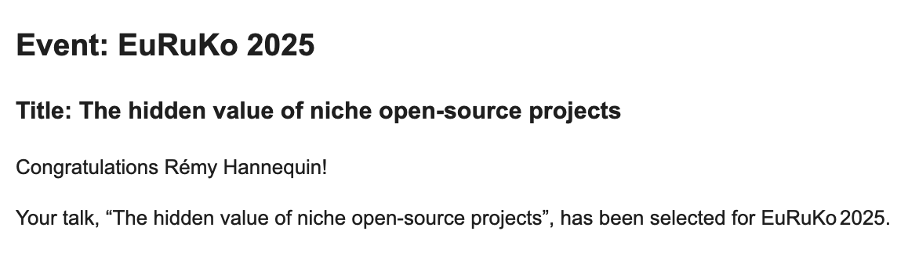
Who knows, maybe you can try to submit a talk to a conference
Get lucky and then be absolutely terrified about being on stage
This is going to make you meet people
Expand your visibility
And create new opportunities
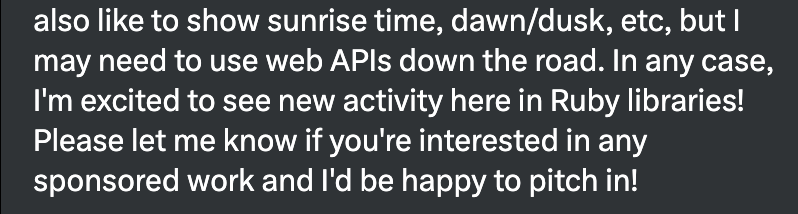
Last year, someone contacted me on a social network about Astronoby
As they wanted to use it in their project
I didn't get to work with them specifically on Astronoby
But I ended up as a consultant for thoughtbot on their project
This can be an idea to sell open source development time at your company
It might bring new client opportunities
One more point, you don't have to take yourself seriously
If this is niche and you feel like you are all alone doing your thing
It also means that you can take your time
Try things and make mistakes
Nobody is expecting anything from you
So you can focus on what you want
Either it's the code, the features, the sharing, the community, the fun, or all of it
And if you don't do side projects, that is very fine too
I know this talk is very much oriented towards side projects
But there are many other occasions where perseverance and passion are welcome
I'm wasting my time,
You are having fun
So, you are not wasting your time
You are having fun, you are learning, you are growing
You don't need appreciation to have a good time
Who needs this?
You are not alone
You are the Ruby community
Who needs it? You do!
As we sometimes say, if it's useless, then it's indispensable
The fact that you are doing it means that there is at least one person who needs it
And you will be surprised to see how many people are actually sharing your interest
Maybe we do need to be able to compute astronomical data in Ruby
Ruby is such a great language, so expressive, so elegant
But yet it is not used much in the scientific community
That can change now
We are all part of the Ruby community
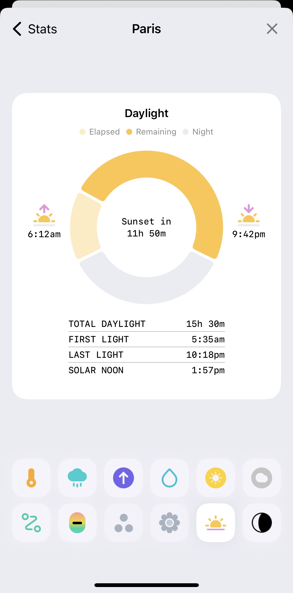
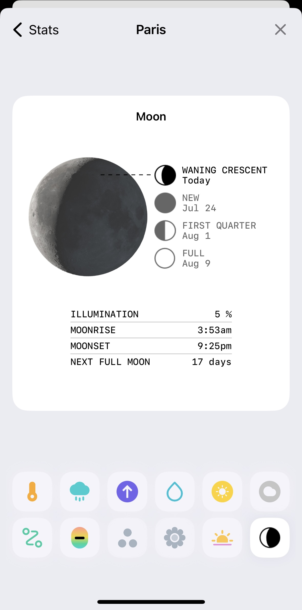
It turns out there is a weather application that very much needs astronomical data
And today, Astronoby is used in production by Hello Weather
I'm not doing this right
You are doing it your way, an original way
I agree getting rid of the imposter syndrome is hard
We often want to do things right and we are afraid of making mistakes
But there are many definitions of "right"
By doing it your way, you are bringing your own style, your own vision
This might become the new "right" way
So much effort
Your efforts are paying in many unsuspected ways
Finally, my favourite one is asking yourself if it's worth it
You are learning, you are growing
You are meeting people, you are having fun
So, yes, this is very much worth it
Conclusion
I hope I didn't turn this talk into some kind of life-style program
All I wanted is to share my experience
There are many obstacles
If you love it, do it
There's so much to take on the way
It's true it's not always easy
You're going to face moments of doubt
You might want to give up
And you might feel like it is not worth it
But if you love it, if you are learning, then do it
You will be surprised by how much you can learn
And how much you can grow
Expect to develop a taste for it
[pictures of astronoby, ephem, opale, almanac, caelus]
Don't be surprised if you develop a taste for it
I mentioned starting Astronoby 4 years ago
But in the last 10 months it made me hungry for more projects
And I'm now developing four other projects
And as many occasions to learn new things
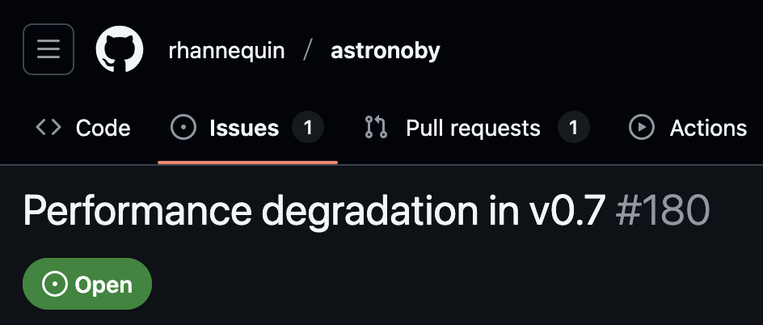
One day you might receive a GitHub issue with bad news
And you will be incredibly happy just to have someone using your project
So weird how someone finding performance issue in your code can make your day
Where do you start?
Open-source one project
Add a README and a gemspec
Share it
Ask for feedback
Ping me
Remember the folder I asked you about at the beginning?
Take one of your projects, the one you love the most
Put it on GitHub publicly
Add a README
Share it with your friends
And ask for one piece of feedback
And here it begins
Please don't hesitate to ping me
I would love to see a new gem emerge for the community
This might be the beginning of a great adventure
And if it's not, at least you will have shared something you love with the world
Ask on socials
Don't hesitate to use social medias to ask for help and feedback
I believe we are a friendly and open community
You can also use initiatives like First Ruby Friend to find a mentor
To help you get started
I think the program is closed for 2025 but will return next year
And if you are very excited about open source
thoughtbot is organising a new online Open Summit on October 31st
With many workshops and talks
About the open source made with thoughtbot and with the community
To conclude, I invite you to let your passions guide you
Niche open source projects are the best
They will make you grow and be excited about work
Which is not something to take for granted
Worst case scenario, you will have a new folder called projects
With a bit more experience and a bit more confidence
Thank you
@rhannequin